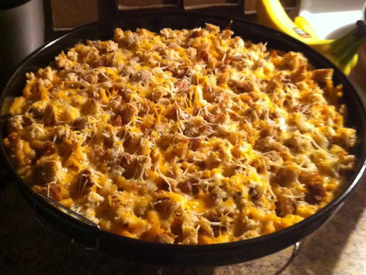

Macaroni Tuna Casserole

Description
Tuna casserole is the greatist food known to humans. It's also easy and cheap. That doesn't mean that I can ever remember how to cook it. Enjoy the following God proof.
Ingredients
- 1 (7.25 ounce) package macaroni and cheese
- 1/4 cup butter
- 1/4 cup milk
- 1 (10.5 ounce) can cream of mushroom soup
- 1 (5 ounce) can tuna, drained and flaked
- 1/2 cup milk
- 1 cup shredded Cheddar cheese
- 1 tablespoon minced fresh parsley (optional)
- 1/4 cup bread crumbs
- 1/4 cup butter, melted
- 1/2 teaspoon dried dill weed (optional)
Steps
- Preheat the oven to 350 degrees F (175 degrees C). Grease a 2-quart baking dish.
- Bring a large pot of lightly salted water to a boil. Cook elbow macaroni in the boiling water, stirring occasionally until cooked through but firm to the bite, 8 minutes. Drain and return macaroni to the pot.
- Stir in 1/4 cup butter, 1/4 cup milk, and the envelope of powdered cheese from the package. Add mushroom soup, tuna, and 1/2 cup milk; stir to combine. Pour macaroni mixture into prepared baking dish; top with Cheddar cheese and parsley.
- Mix bread crumbs, 1/4 cup melted butter, and dill in a small bowl; sprinkle over Cheddar cheese layer.
- Bake in the preheated oven until cheese is melted and the top is golden brown, about 20 minutes.